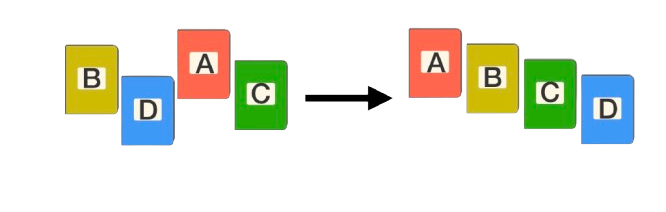

Timsort Rendezési Algoritmus
Hatékonyság, tárigény, megvalósítás
Timsort algoritmus
A Timsort egy hibrid rendezési algoritmus, amely a valós adatok rendezésére lett optimalizálva. 2002-ben vezették be Python implementációjában, és azóta számos más programozási nyelv alapértelmezett rendezési algoritmusává vált, például a Java esetében is.
A Timsort a merge sort és az insertion sort kombinációjából származik, amelyek előnyeit ötvözi. Az algoritmus alapelve az, hogy az adatokban már meglévő sorrendet kihasználva növeli a hatékonyságot. Ahelyett, hogy a teljes tömböt rendezetlen adatként kezelné, először kisebb, már rendezett részekre – úgynevezett run-okra – bontja. Ezeket a részeket aztán egy módosított merge sort algoritmussal fűzi össze.
Működésének fő lépései
- Run-ok detektálása: Az algoritmus először megkeresi az adatokban található előre rendezett szekvenciákat (run-okat), amelyeket nem kell újra rendezni.
- Részrendezés:Ha a run-ok túl kicsik, akkor az algoritmus a gyors és hatékony insertion sort algoritmussal rendezi őket.
- Merge: A rendezett run-okat ezután a merge sort segítségével kombinálja, hogy végül egy teljesen rendezett tömböt kapjunk.

Hatékonysága és Tárigénye
Miért hatékony?
A Timsort különösen hatékony valós adatokon, ahol gyakran előfordulnak előre rendezett vagy majdnem rendezett szegmensek. A meglévő rendezettség kihasználásával az algoritmus csökkenti az összehasonlítások és átrendezések számát, és emiatt sok esetben jobb teljesítményt nyújt, mint más általános rendezési algoritmusok.
Idő- és tárigény
A Timsort O(n log n) időkomplexitással rendelkezik, ami a legtöbb rendezési algoritmushoz hasonló. Azonban a legjobb esetben, ha az adatok már részben rendezettek, az időkomplexitása akár O(n) is lehet. A tárigénye pedig általában O(n), mivel a merge sort szakasza további helyet igényel az összeolvasztáshoz.